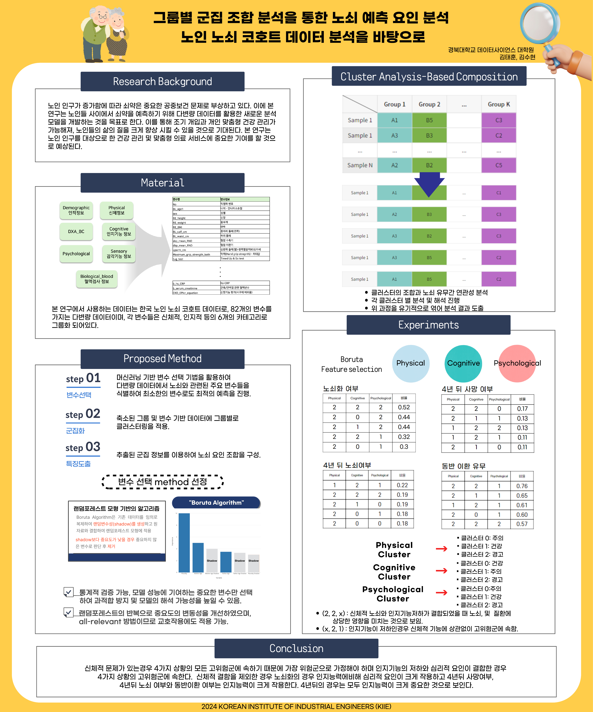

소개
범용 LLM은 얕고 넓은 지식에는 강하지만, 특정 전문 도메인이나 커뮤니티에서만 통용되는 좁고 깊은 지식 앞에서는 근거 없이 그럴듯한 답을 내놓는 경우가 많습니다. 그렇다면 직접 즐겨 하던 게임 문서로 이를 검증해보자는 생각에서 이 프로젝트를 시작했습니다. 실제로 baseline 테스트에서 한 아이템의 가격을 물었더니 모델이 정답 대신 이름이 비슷한 다른 아이템 가격을 자신 있게 답했고, 검색기만 바꿔서는 여전히 상점표 데이터가 깨져 결국 구조화 데이터로 따로 만들고 나서야 정확한 가격과 구매 제한을 함께 회수할 수 있었습니다.
문서 기반 LLM/RAG 시스템의 평가 파이프라인과 소형 언어모델(SLM) 데이터·파인튜닝 과정을 게임 도메인으로 직접 재현하며 공부하고 있습니다. 관심사는 모델이 얼마나 그럴듯하게 말하는지가 아니라, 어떤 조건에서 답을 신뢰할 수 있고 어떤 조건에서 거부해야 하는지를 측정 가능한 기준으로 만드는 것입니다.
벤치마크 질문 설계, 검색기 비교(BM25/BGE-M3), 데이터 라벨링, RAFT 학습 데이터 구성, LoRA/QLoRA 파인튜닝, adversarial·stealth safety 평가까지 한 파이프라인 안에서 실험하고, dev 성능과 held-out 성능을 분리해서 보고하는 것을 원칙으로 삼고 있습니다.
게임 도메인은 방법론을 검증하기 위한 연습장이었을 뿐, 벤치마크 설계·분리 측정·held-out 검증·safety red-teaming 같은 평가 방법론 자체는 도메인에 종속되지 않아 금융 서비스의 AI 답변을 검증하는 데도 동일하게 적용될 수 있다고 생각합니다.
수상 — 제10회 대한민국 SW융합 해커톤 대회 우수상(과학기술정보통신부, 2023.08), 제9회 국가승인통계 활용 디지털콘텐츠 공모전 장려상(통계청, 2022.10)
자격/어학 — 빅데이터분석기사, SQLD, 정보처리기능사, IELTS 6.5
프로젝트 리스트
-
개발 사이클 완료
DNF Domain QA SLM/RAG v2
목표는 던파 공식 문서를 근거로 답하되, 문서가 질문 전체를 뒷받침하지 못하면 확인 가능한 부분만 답하고 나머지는 거절하는 QA 시스템을 만드는 것이었습니다. v1의 오류를 검색 실패·잘못된 근거 선택·생성 및 거절 실패로 나누어 측정하고, 같은 검색 결과를 RAG-only·base SLM·tuned SLM에 제공해 학습 효과를 통제 비교했습니다. tuned SLM은 인용과 부분답변을 개선했지만 거절 기준을 충족하지 못해 blind는 열지 않았습니다.
-

학부 연구그룹별 군집 조합 분석을 통한 노쇠 예측 요인 분석
2024 대한산업공학회 춘계공동학술대회에서 발표한 개인 연구입니다. 노인 노쇠 코호트의 신체·인지·심리 데이터를 전처리한 뒤, Boruta로 유의미한 변수를 골라내고 K-means로 군집을 나눠 노쇠와 관련된 요인 조합을 분석했습니다.
-
장려상 수상
국가승인통계 활용 디지털콘텐츠 공모전 — 원자력·신재생에너지 균형 정책 제언
통계청 주최 제9회 공모전에서 장려상을 수상했습니다. 탄소배출·발전량·에너지 소비 등 여러 국가승인통계를 교차 분석해, 원자력과 신재생에너지를 함께 활용해야 한다는 정책 결론을 도출했습니다.
스킬
평가 · 안전성
벤치마크/루브릭 설계, Held-out 검증, Adversarial·Stealth Red-teaming, Ablation 설계
모델 · 데이터
RAG(BM25, BGE-M3), LoRA/QLoRA 파인튜닝, RAFT 데이터 구성, 데이터 라벨링/정제(Label Studio)
도구
Python, Ollama, Hugging Face, Selenium, Gradio, Git